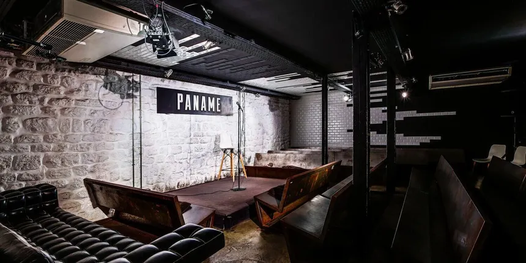
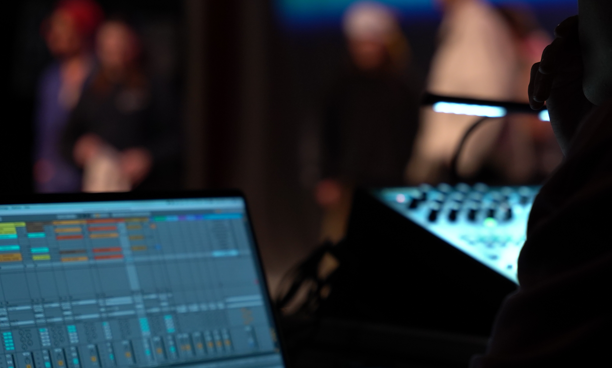
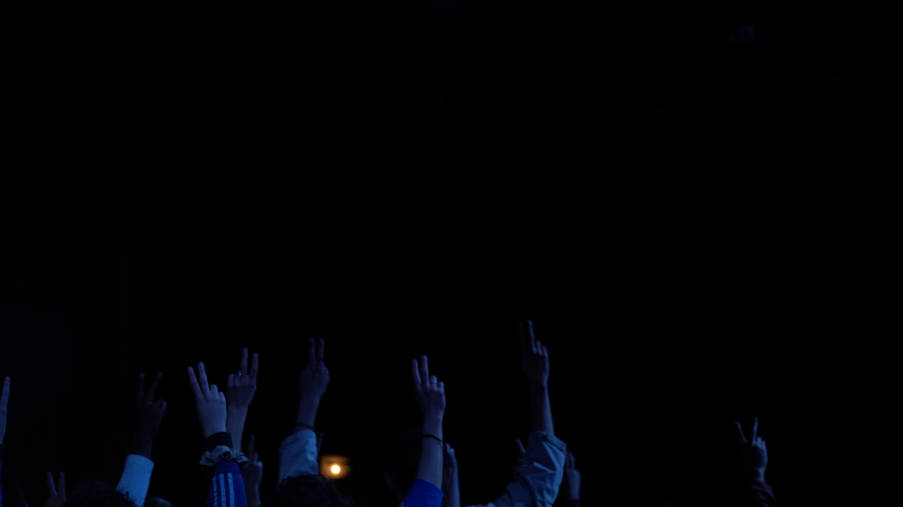
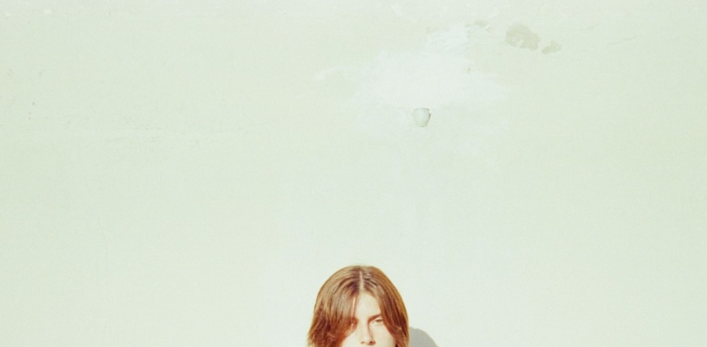

Étudiant ingénieur du son
Jules
Frémondière
3iS · Promotion 2026
Du plateau au mix : captation, repair, design, composition à l'image. Une approche technique et rigoureuse du son, nourrie par une pratique artistique continue — musique, montage, création visuelle.
jules.fremondiere@3is.frMixage
Écoute active, prise de décision, Pro Tools.
Composition
Créativité, Organisation, Live 12.
Repair
Nettoyage Audio, RX 10, Ozone.
Recording
SoundDevice, Couple micro.
Formation 3iS
Ingénierie du son & Sound Design.
Certif. Avid
Pro Tools Fundamentals User.
Logiciels
Pro Tools, Ableton, FL Studio.
Livrables
Mixage, Sound Design, Prise de son.
Live Mix
Routing & mix direct sur Behringer X32.
Europe
Danse contemporaine (avec Boris Charmatz en 2014).
3iS - Institut International
Bachelor Son à l'image / Ingénieur du son
Prise en main de matériel professionnel, Intervenants passionnés, Détermination.

Service Civique / Césure
Projet Court Métrage grâce à l’association Thermogène Média.
▶ Voir le projet vidéo
BAC STI2D ITEC
Esprit d’équipe, Innovation et Informatique, Réflexion technique.
Autodidacte & Exploration AV
- ›Composition musicale
- ›Montage vidéo

Danseur Hip-Hop/Contemporain
Tournée Européenne avec le chorégraphe Boris Charmatz.

/// Projets et Collaborations
Je suis la fumée... — Court-métrage
Tournage extérieur,
Prise de son perche · Voix off en post · Gestion du bruit ambiant lors de la captation
MKH 416 · Sound Devices · ProTools
L'Étranger (A. Camus) — Teaser Théâtre
Création d'une identité sonore pour accompagner l'absurdité de la pièce.
Composition musicale originale · sound design immersif.
Ableton Live 12 · Synthèse analogique · SUITES Arturia
Instable — Websérie
Tournage urbain bruyant avec des dialogues croisés rapides.
Supervision sonore : prise de son de plateau (Perche/HF) et post-production audio.
SD Mixpre6-II· ProTools · Nettoyage spectral et mixage dynamique
Ouragan — Résidence
Performance artistique immersive impliquant une spatialisation et une communication en temps réel.
Gestion de l'architecture audio : routing console complexe, patch et diffusion multicanal.
Console X32/M32 · Spatialisation multicanal · Routing de secours

Srh - qutumeregardes — Musique
Mix d'un titre rap
Ingénieur du son mixage et mastering · Digital Rap
Ableton Live 12 · Traitement vocal · Balance spectrale et loudness
Capharnaüm — Court-métrage
Court-métrage de fiction intimiste nécessitant une forte dynamique sonore.
Prise de son plateau, sound design et mixage stéréo
MixPre-6 · ProTools · Bruitage et sound design narratif
Désaccordés — Émission TV en direct
Aucune deuxième prise possible.
Ingénieur son direct, routing complet sur console X32.
Prise de décision en temps réel · Mix Broadcast
Long Day — Clip musical
Réalisation d'un clip couplé à une production musicale.
Montage vidéo synchrone, composition musicale et mixage audio.
Premiere Pro · FL Studio 21 · Synchronisation image/rythme
Sacré Graal — Court-métrage
Teaser du 50ème anniversaire de Sacré Graal (au Cinema St-Paul).
Ingénieur du son (Prise de son).
Prise de son en ville · Beaucoup de passage · Zoom F8n · MKH 416
rover.mp3
Ambient - Trap
wordsnight.mp3
Pop - Lo-fi
shadow.mp3
Dark Synth - Bass
perception.mp3
Cinematic - War Music
lightoff.mp3
Ambient - Cinematic
Reference_Library
Séries / Films
/// One Battle After Another - Session Reconstruction
↳ Récupération de la voix via IA puis restauration sous iZotope RX10.
↳ Composition originale sur Ableton Live 12, mixage orienté dynamique.
↳ Synthèse granulaire et impacts créés sur-mesure (Arturia Pigments).
↳ Travail de synchro et textures organiques, en partant d'une prise de son moyenne.
↳ Grosse recherche d'ambiances et de sons de voitures, nettoyage spectral léger.